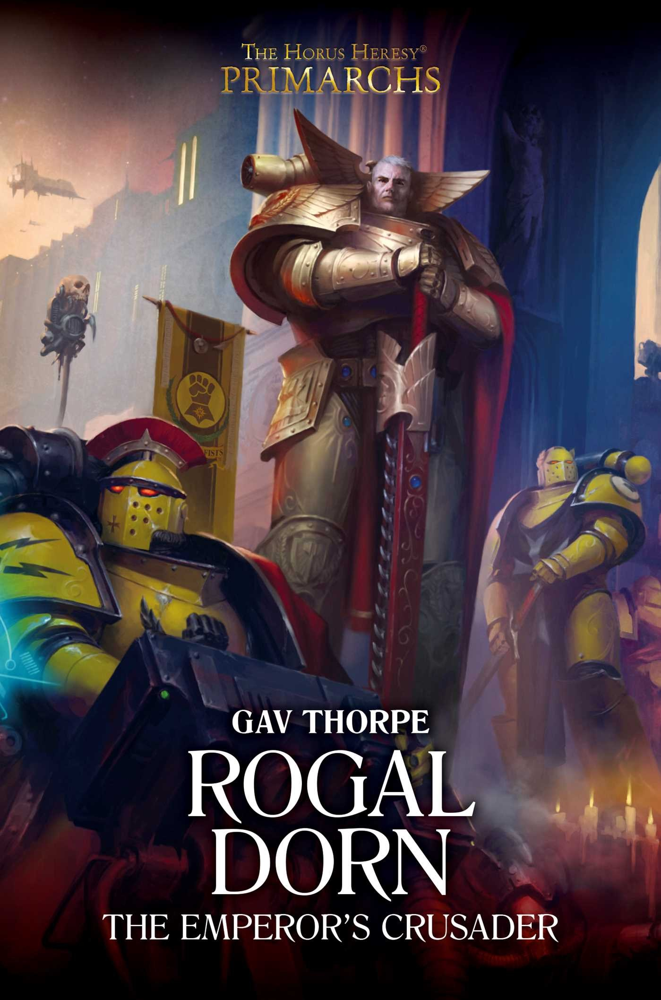

ROGAL DORN: THE EMPEROR'S CRUSADER

Author: Gav Thorpe
Format: Novel
Six decades into the Great Crusade, Rogal Dorn is one of four primarchs tasked with securing worlds beyond a vast warp storm. Isolated in the Occluda Noctis, he leads the Imperial Fists against an unfamiliar enemy.
Introduction reviewed against Black Library’s description on 2026-09-27. The publisher page may contain spoilers.
Publication facts: publisher source, checked 2026-09-26.
Open this work in the interactive Archive to track reading progress and explore related works.
Take the three-question memory check for this work. The quiz contains story spoilers.